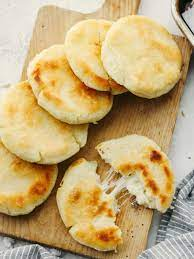

Arepas

Description
These little cornmeal cakes are made with love and cheese. My kids love it so much that they even love eating the raw dough! It's the perfect breakfast food but can also be paired with your favorite lunch or dinner meat!
Ingredients
- Cornmeal
- Butter
- Salt
- Cheese
- Warm water or milk
Steps
- First, make sure you preheat you griddle to 350 degrees while you mix the ingredients.
- I usually don't measure how much I use of the cornmeal. I fill a mixing bowl to my heart's desire.
- Next, you add in an appropriate amount of butter, salt, and water.
- CHEESE! Any cheese will do but I prefer to use shredded mozzorella or queso campesino. Add cheesy goodness until you feel it's enough!
- Once all of the main ingredients are added, add in some warm milk or water (I usually use water). Then start mixing all of the ingredients with your hands until you have a nice doughy consistency. Be careful not too add too much water! If you do, the dough will be very watery and you will not be able to shape the arepas. Add water in increments.
- After you let the dough rest for about 10-15 minutes, you are now able to shape them into discs. You can do this by hand or you can use ceram wrap and a small child's bowl to make a perfect shape! To do this, you envelope some of the dough in the ceram wrap, evenly flatten out the dough, and then use the bowl template...VOILA!! Perfect circle!
- Once you've shaped the dough, place the arepas on your preheated griddle. Cook each side until you see light/golden burn marks from the cheese. NEVER LET THE CHEESE MARKS GET BLACK!! It'll ruin this tasty delicacy and everyone will just be unhappy...womp womp.
- After cooking on the griddle, pair with some eggs or your favorite meat! Yummy, Colombian goodness!